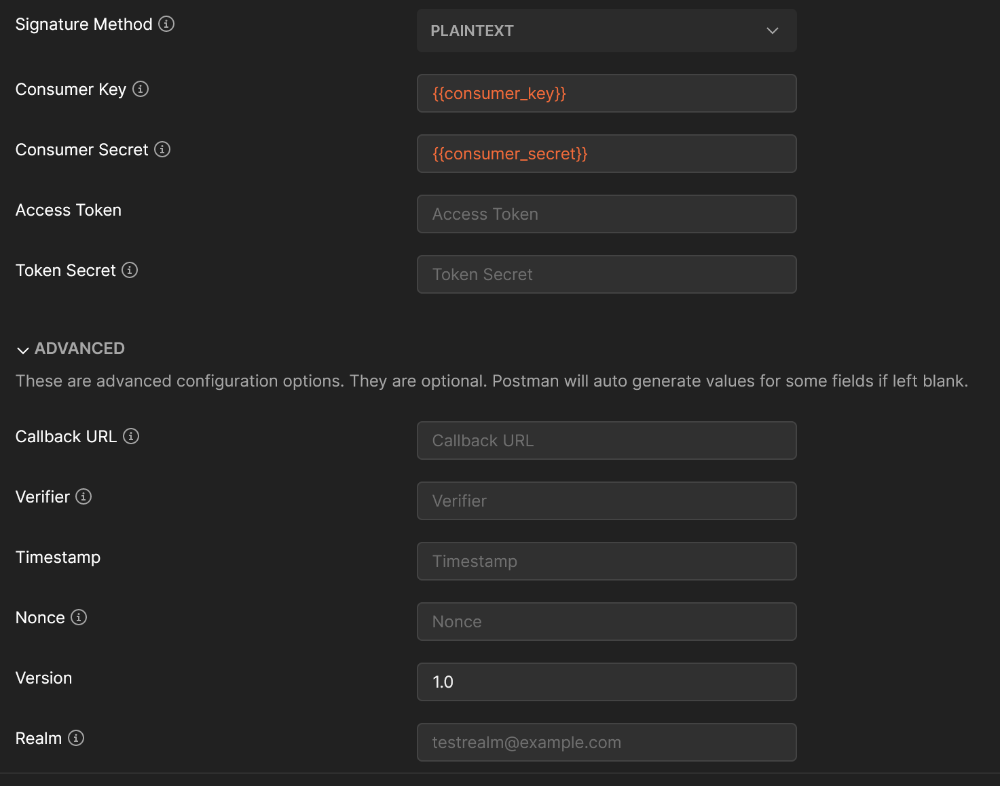
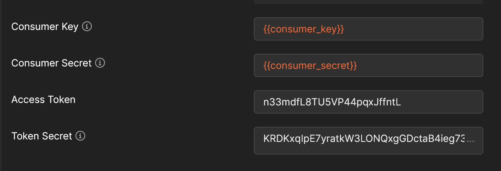
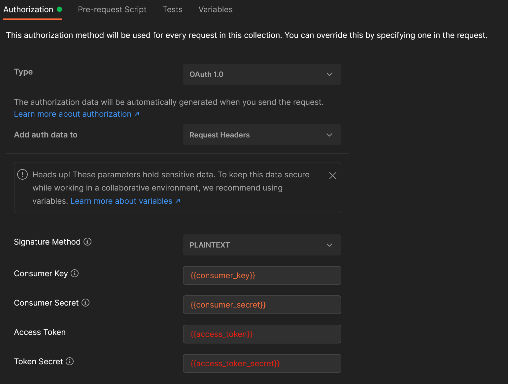

9 - Using Postman in Unconventional Ways
Published 2021-04-29I don't usually like to talk about $WORK, but I do like to talk about the tools I use to do it. Today we're going to talk a little bit of both.
Postman
Postman was a chrome extension that turned out to be so useful it got pulled out into a whole application. It's still electron and react under the hood, though the app itself is no longer open source (at least as far as I could find).
Postman is maybe best described as a GUI version of cURL. It lets you make HTTP requests of all types (browser address bars only let you make GET requests, mostly), including GET/POST/PUT/PATCH/DELETE and many more. If you want to learn the basics, the docs are good. If you haven't yet, I highly recommend you check them out.
Postman at Work
My usual work is on a big web application that is powered by a ton of micro-services. One of the joys of working at a big corporation is you get to somewhat define the standards. If you look at Facebook, for example, the internet wasn't doing what they wanted, so they built React. One of the things we built was an extension to Oauth.
OAuth 1 is a pain to work with.

10 different fields required just to make an authorized request to somewhere, 11 if you count the signature method. It's madness. Even when we coded up service clients in Ruby, Python, and Java, we still needed to know at least 3 pieces of information before we could hand over our requests to a library: the key, secret, and access token url.
Fortunately, these are the kinds of things you can set up once and mostly forget about.
Making OAuth 1 Tolerable with Postman
Okay, so first things first, we need to understand how oauth 1 works before we can automate anything. I have found that it's always worth investing a little extra time to find out how things work before you start throwing code at them. For OAuth 1, we have to make a request and get information from the response which we will use in every future request.
The request is to that access token url I talked about earlier. You send it your key and secret. This is where we come to our first cool bit of postman. You can put `` basically everywhere in the ui, including in other variables. You'll probably notice in that screenshot above that I have a consumer_key and consumer_secret defined as variables. You can make these global, but if you'll be hitting a development, sandbox, staging, or other type of non-production environment, then it will be much better to use postman environments. I use these extensively so I can keep my requests the same, and just the environment specific things flex.
Once you make an initial oauth authorization request, you'll get back a long string that looks suspiciously like a query string:
oauth_token=n33mdfL8TU5VP44pqxJffntL&oauth_token_secret=KRDKxqIpE7yratkW3LONQxgGDctaB4ieg73UKVyitSwp0GMY
I'll quickly note here that there may be more things on the end, but they're not important for us.
Great! So we have an oauth_token and oauth_token_secret. We can just plug these in and be off to the races, right?

Well, yes, you can do this, and if you're happy with this, great! But remember, those tokens don't last forever. Most of mine have lasted somewhere between 15 minutes and an hour. Do you really want to keep having to change these manually every few requests?
Automate the Boring Stuff
Assuming the answer is no, you're not happy with the status quo, it's time to look at the Postman scripting API. As it turns out, you can do almost anything you could click or type programmatically in Postman. Want to send a request when this one finishes? You can do that! Want to repeat a request over and over, changing just one thing? (perhaps an id?) You can do that too. But what's important for us here is that we can read the response body, and we can set environment variables.
Before we start, I'll mention that the Pre-Request Script runs before the request is sent. It lets you mess around with the URL, parameters, request headers, and request body. Instead of having a Post-Response Script (for the symmetry), Postman calls it "Tests".
With the power of regex, we can extract exactly the bits we want into variables:
// find the exact string oauth_token=, followed by anything,
// followed by &oauth_token_secret=, and finally anything that's not an ampersand (&)
var regex = /oauth_token=(.*)&oauth_token_secret=([^&]*)/g;
// change that & into a proper ampersand
var decoded = decodeURIComponent(responseBody);
// run the regex against the URI decoded response body
var match = regex.exec(decoded);
// the parens in our regex make what are called capturing groups,
// which we extract to variables here
var accessToken = match[1];
var tokenSecret = match[2];
And now that we have these as variables, it would be really nice if we could auto-populate them into all our requests. Two things working together allow us to do this. First, the rest of the "test" script:
pm.environment.set("access_token", accessToken);
pm.environment.set("access_token_secret", tokenSecret);
This sets the current environment to have those two variables. It will create them if they don't exist, or overwrite them if they do.
The second part is we need to apply this to all our requests. Postman lets you group requests into collections, and you can set just about everything you'd want to set for an individual request on the collection itself. Here, we want to set the Authorization: 
And that's it! You have a request (I call mine Populate Oauth (Run this first!)) which populates your oauth token and secret, and every request in the collection inherits that auth!
Where to Go From Here
From here, the sky is truly the limit. If you wanted to spend a lot more time than I have, you could have all your requests watch for 401 (Unauthorized) status, and run your populate oauth request if one is detected, then re-run your original request. Be careful of loops if you do that. You could build this same request flow in Newman, the Postman CLI. You could probably do something I haven't thought of yet. Just beware of rabbit holes.